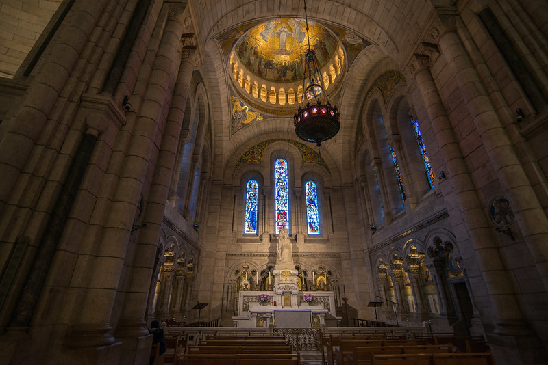
background
I was raised Catholic, and it was a significant point of tension between my mother and me. I talked about Christianity in terms of mythology.
Ironically, my resistance probably resulted in more interest than I might have had otherwise. It led to an interest in other religious practices. I was drawn to the occult section at the used bookstore in town.
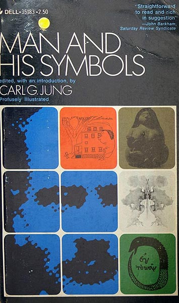
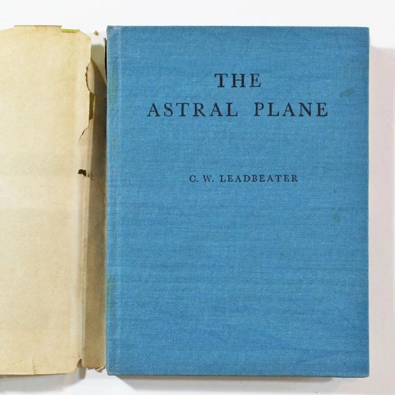
In college, studying music and art, I learned that many things I liked had roots in not only religious, but specifically Catholic tradition.
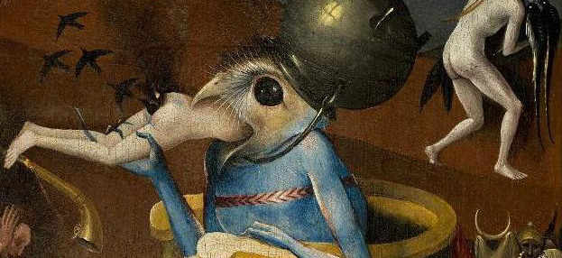
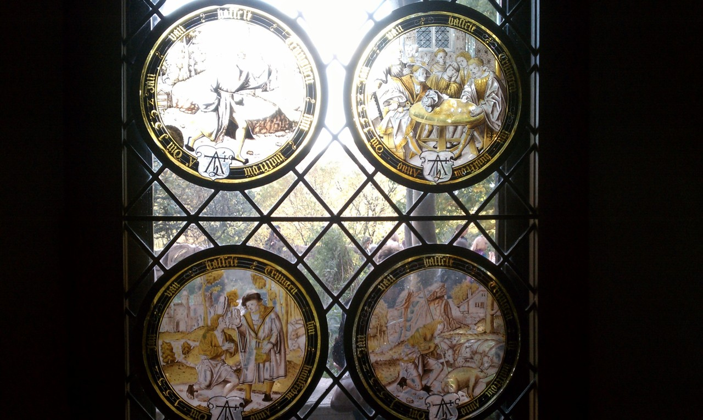
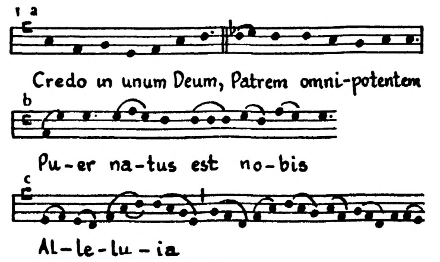
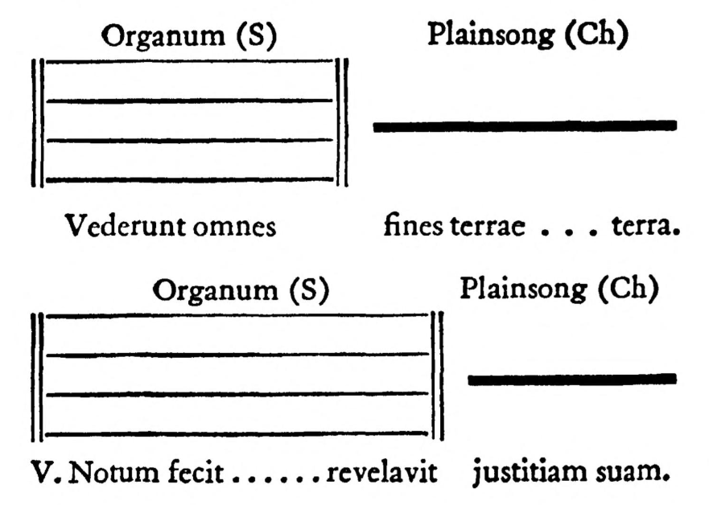
As a kid, I was also obsessed with comic books and PC games.
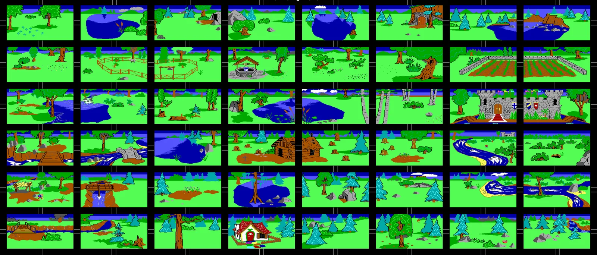
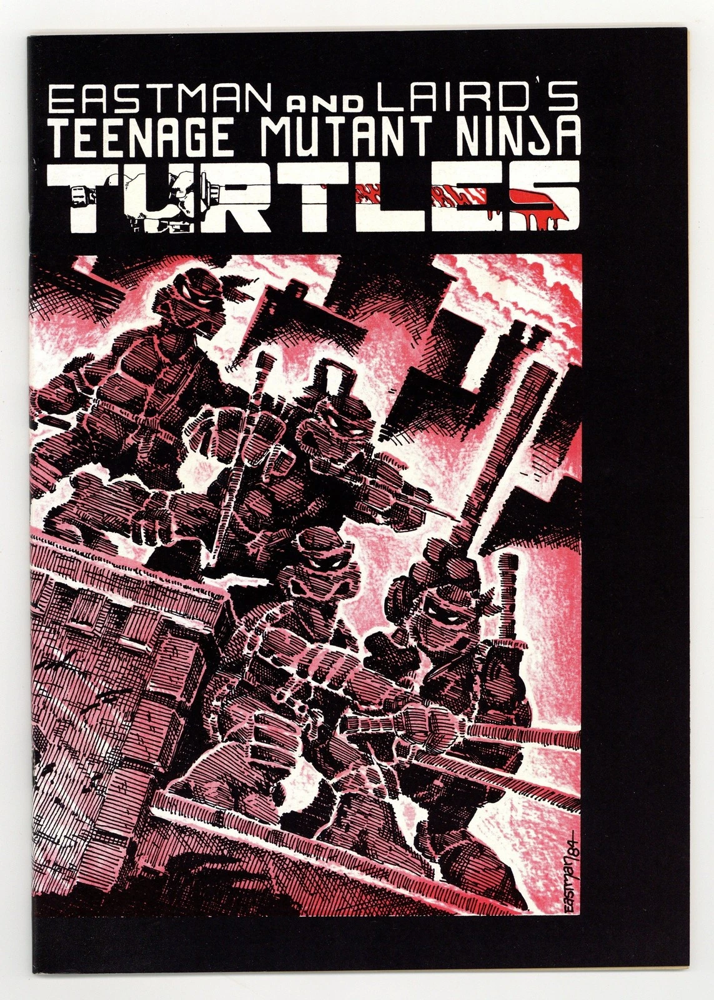
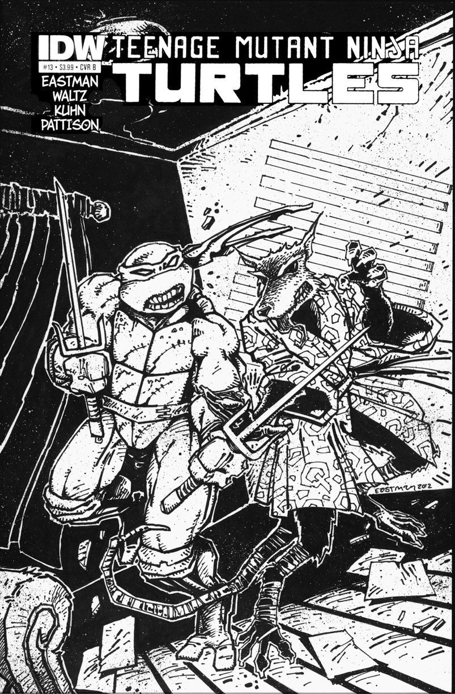
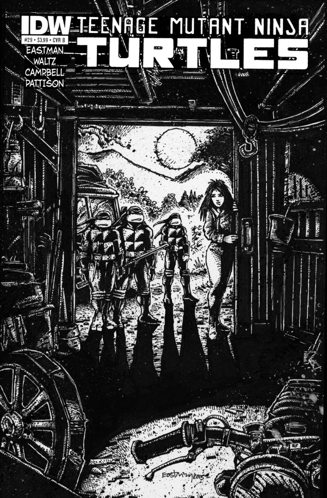
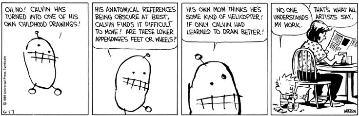
An oddly influential game was Blade Runner, a 1997 point-and-click adventure game based on the 1982 film, which, as I discovered, was based on Do Androids Dream of Electric Sheep?
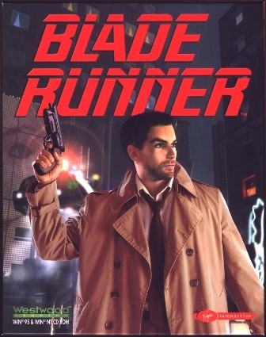
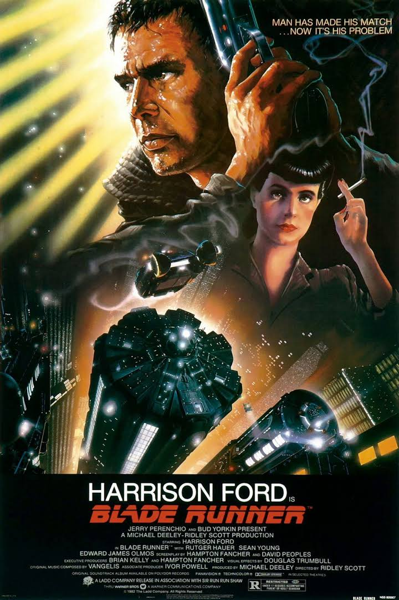
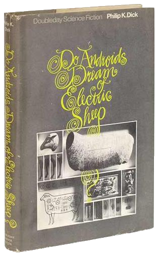
work
My works consists of animation and interactive or generative digital art. I build software tools to synthesize my interests in drawing, writing, research and music.

infinite hell, 2020.
I use procedural generation in a lot of my work because it expands the possibility of a piece in a controlled way. The computer is somewhere between an orchestra performing a score and collaborator, whose main input is randomness.
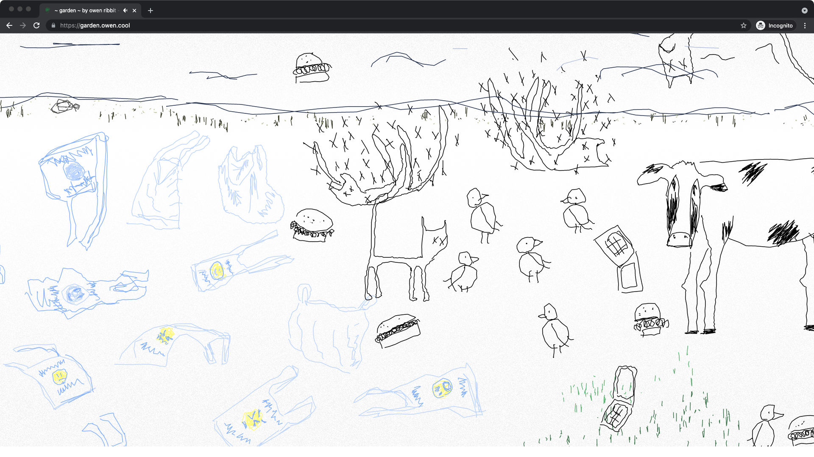
garden, 2021.
all spiders go to hell, 2025
four compositions, 2024
Link: https://owen.cool/talks/weirdosphere/